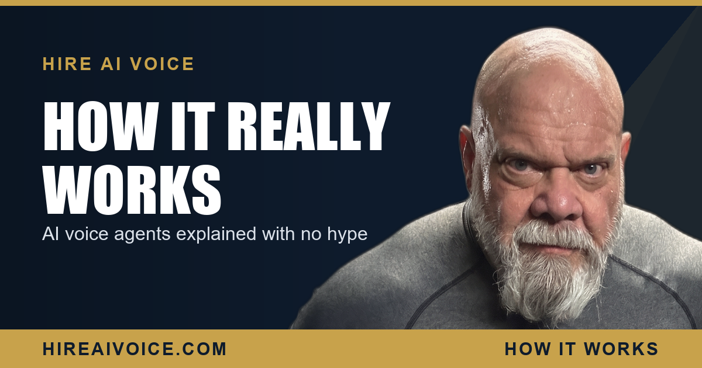

How AI Voice Agents Actually Work, With No Hype

The Short Version
- An AI voice agent answers your phone, understands plain speech, and talks back in a natural voice in real time. No phone tree, no "press 1."
- It follows a custom call flow we build from your business: your services, hours, pricing rules, service area, and the exact way you want callers qualified.
- It books appointments straight onto your calendar during the call, so there is no phone tag and nothing rolls to voicemail.
- When a call needs a human, it hands off gracefully: transfers the call or texts you the details. It never pretends to know what it does not.
- It is a front desk, not a closer. It answers, qualifies, books, and routes. Your judgment still runs the business.
How Do AI Voice Agents Work?
An AI voice agent answers your phone, turns the caller's speech into text, decides what to say based on a call flow built from your business, and speaks back in a natural voice, all in real time. That loop, listen, understand, respond, repeats through the whole call. To the caller it just feels like talking to a helpful person who happens to know your business cold and never has a bad day.
There is no magic in it, and you do not need to understand the plumbing to use it. But you should know what is actually happening, because the businesses that win with this tool are the ones who understand what it is good at and where its edges are. So here is the honest, jargon-free version.
How Does It Understand What a Caller Says?
It uses speech recognition to convert spoken words into text, then a language model reads that text in context to figure out what the caller actually wants. This is the part that makes it different from the old phone trees you hate. It is not matching rigid keywords or forcing people through a menu. It understands plain, messy, real-world speech: half sentences, interruptions, "uh, yeah, my AC is making a weird noise and it is like 90 in here," all of it.
Because it reads the whole conversation, not one isolated word, it can follow context. If the caller says "tomorrow afternoon" after you already talked about an appointment, it knows what they mean. If they change their mind mid-call, it keeps up. That is the leap that makes voice AI feel like a conversation instead of a robot.
It is not a phone tree that got faster. It is a conversation that does not need you on the line.
What Is a Custom Call Flow?
A custom call flow is the script and knowledge base we build for your specific business so the agent gives accurate, on-brand answers instead of generic ones. This is the work that happens before the agent ever takes a call, and it is where the real value lives. A voice agent with no knowledge of your business is useless. A voice agent that knows your services, your hours, your service area, your pricing rules, and your most common questions is a front desk that never clocks out.
We load it with the facts: what you do, what you do not do, where you work, when you are open, and exactly how you want a caller qualified before you spend a minute on them. If you only take jobs inside Santa Clarita Valley and parts of Los Angeles County, it knows that. If you want every caller asked two specific questions before booking, it asks them. The flow is yours, and it answers like you trained it, because you did.
Can It Actually Book the Appointment?
Yes. The agent connects to your calendar, sees your real availability, and books the caller into an open slot during the call. This is the difference between a tool that takes messages and a tool that books jobs. The caller does not get told "someone will call you back." They get offered a real time, they pick one, and it lands on your calendar with a confirmation, while they are still on the phone.
That matters because the moment a caller is ready to book is the moment you want to capture, not three hours later when you finally check voicemail and they have already hired someone else. The agent closes that gap to zero. This is the whole point of an AI receptionist that answers every call 24/7: it does not just catch the lead, it converts it into a booked appointment on the spot.
What Happens When It Cannot Handle the Call?
It hands off gracefully. This is the part the hype merchants skip, and it is the part I care about most, because I spent years in corrections and on the LAPD before 27-plus years selling real estate here in Santa Clarita, and I do not trust anything that pretends to be perfect. A good AI voice agent knows its limits. When a caller asks for something outside the call flow, asks for you by name, or hits a situation that genuinely needs a human, the agent does not guess and it does not stonewall.
It does one of two clean things: it transfers the call to you, or it takes the details and texts them straight to your phone so you can pick up the thread. The caller never hits a dead end, and you never lose the lead. That graceful handoff is the difference between a tool you can trust on your business line and a gimmick that embarrasses you in front of a customer.
What an AI Voice Agent Cannot Do
Let me be straight with you, because that is how I do business. An AI voice agent will not replace your judgment, close a complicated negotiation, or make promises outside the rules you set. It is a front desk, not a closer. It answers, it qualifies, it books, and it hands off. For anything that needs a human decision, a real read on a person, or a conversation that goes off the map, it routes the caller to you instead of winging it.
That is a feature, not a weakness. The job you actually want it doing is the one you keep missing: answering every call instantly, day or night, so no lead ever hits voicemail and calls your competitor. Do that one thing reliably and it pays for itself many times over. If you want the deeper comparison, see why a voice agent beats a chatbot for a phone-driven business, and the honest take on whether your customers will know it is AI.
So Is It Right for Your Business?
If your phone is how customers reach you, and you are losing calls because you are on a job, on another line, or asleep, then yes. The setup is simple: we build your call flow, connect your calendar, and you are live in 72 hours. It is $297 a month for the core agent, $497 for the advanced build, and there are no contracts, because I would rather earn the next month than trap you in one.
You do not have to take my word for it. Call Sarah, our live AI agent, at 661-299-7299 and have a real conversation with the exact technology this article just described. Then judge it for yourself.
Hear It Answer Your Phone
Our AI voice agent answers every call 24/7, follows your custom call flow, books the job, and hands off to you when it should. Live in 72 hours. $297/month, no contracts. Or call Sarah, our live agent, and hear it yourself.